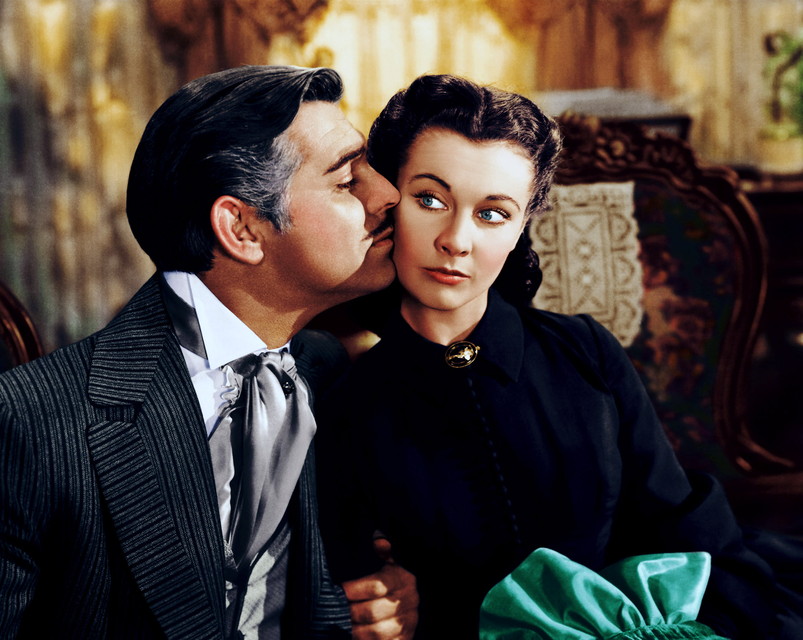

Scarlett O'Hara
Nu mi-a plăcut niciodată să adun cioburile sparte şi să le lipesc la loc, spunându-mi că vasul e nou. Ceea ce s-a spart, s-a spart; şi prefer să-mi amintesc cu plăcere de vasul întreg, decât să-l am înaintea mea şi să-i văd crăpăturile, tot restul vieţii mele.
Scarlett O’Hara este o femeie ambițioasă, sensibilă și puternică, supusă unor praguri de încercare pe care reușește să le depășească. „Scopul scuză mijloacele”, dar „Și mâine este o zi..” sunt două dintre credințele care i-au influențat evoluția și care au transformat personajul Scarlett O’Hara într-un personaj controversat, pozitiv și negativ în același timp. La o primă impresie ți se pare că joacă teatru, că e falsă în declarații și că nu urmărește decât să fie admirată și mereu în centrul atenției. Comportamentul seducător atrage invidia femeilor și face „victime” în rândul bărbaților, iar schimbările bruște de dispoziție, trecerea de la râs la plâns, debusolează și dezarmează bărbații care intră în jocul seducător preferat de Scarlett. Comportamentul de copil răsfățat din perioada de glorie este înlocuit cu cel de luptă pentru supraviețuire din perioada războiului pe care l-a și câștigat.
